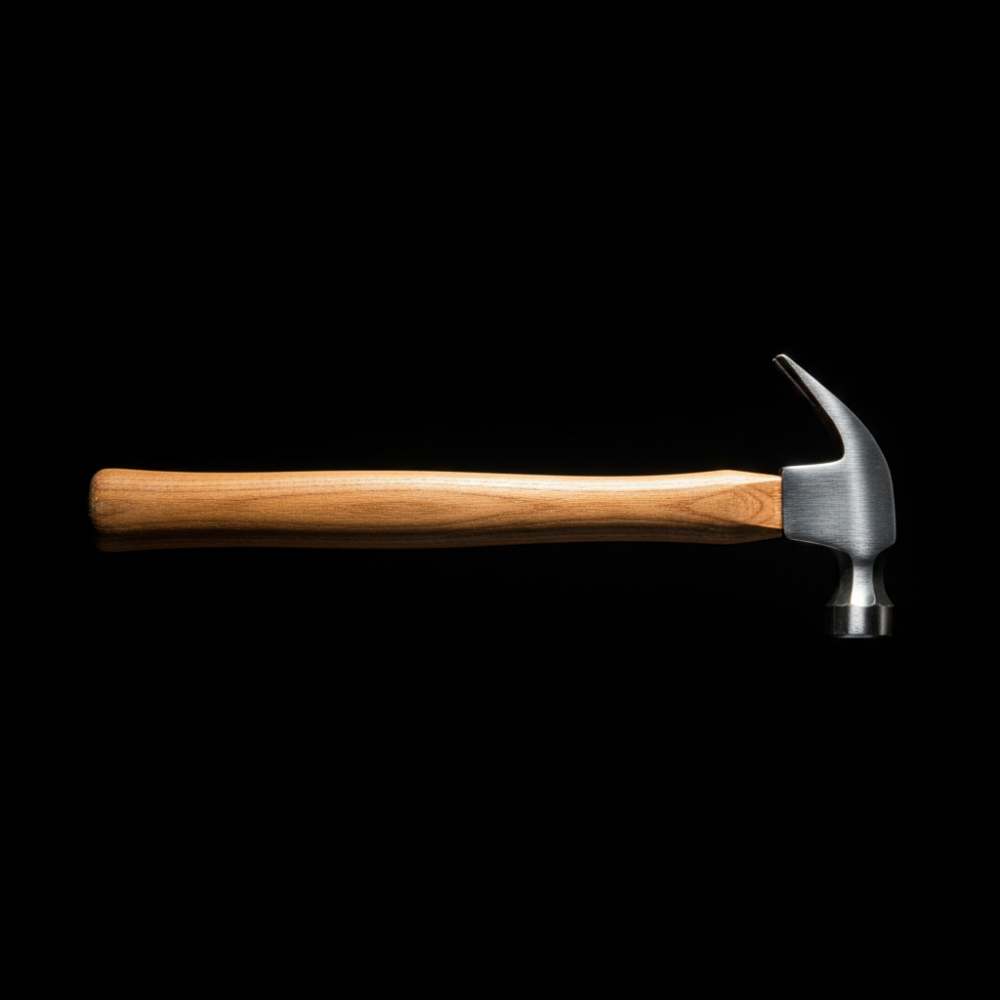
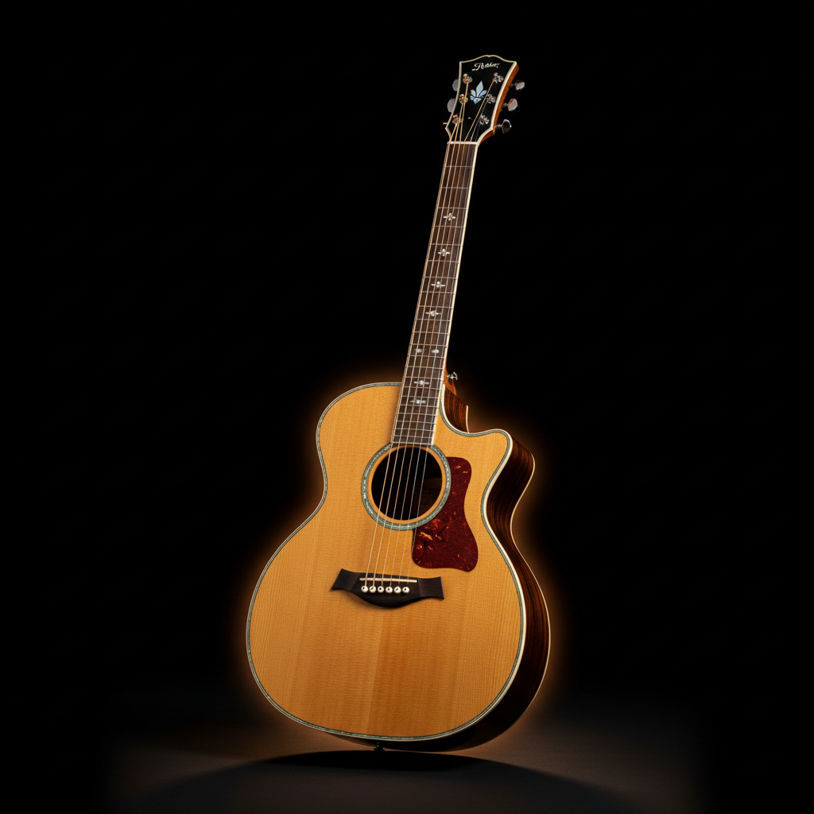
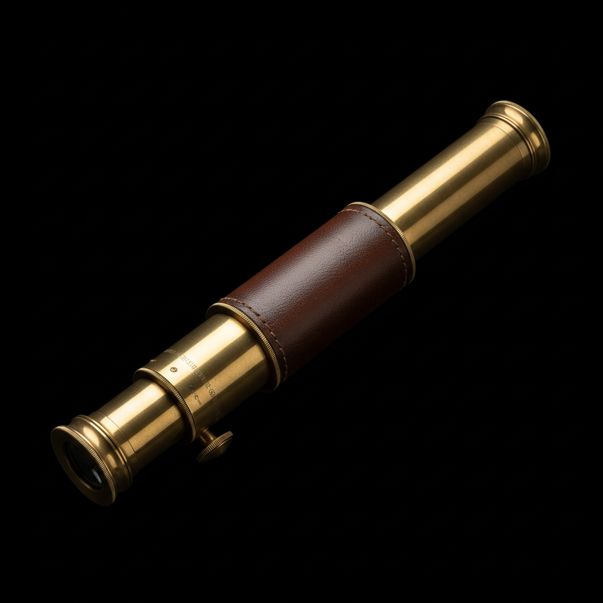
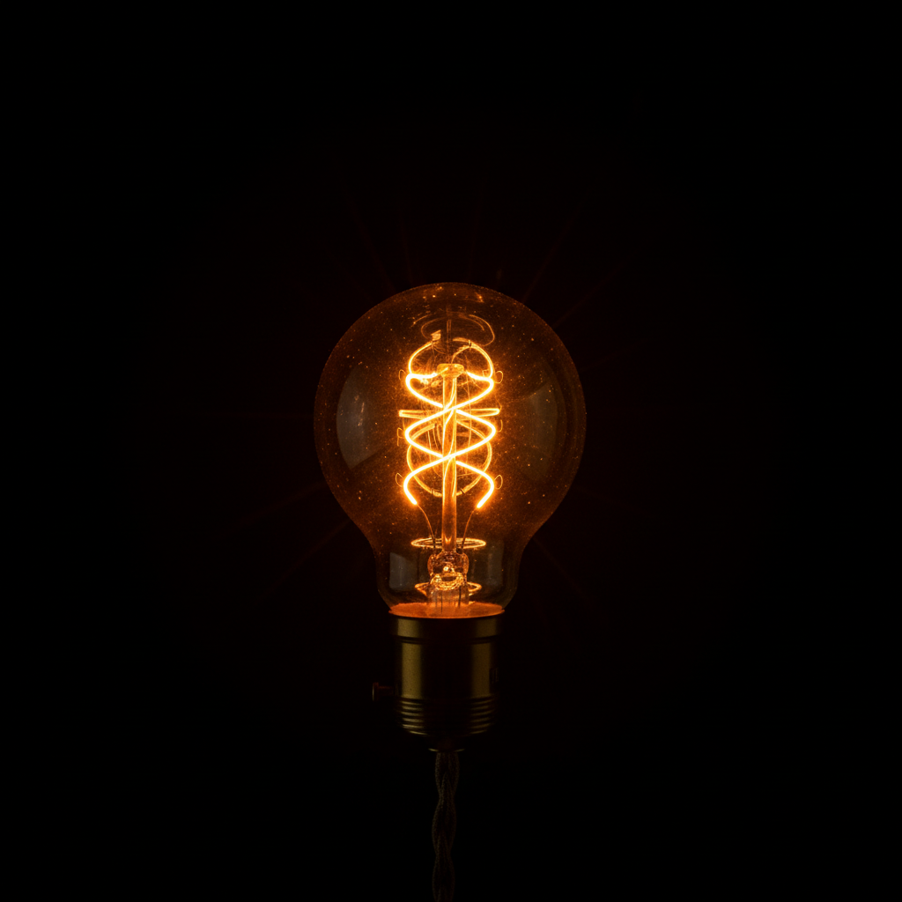
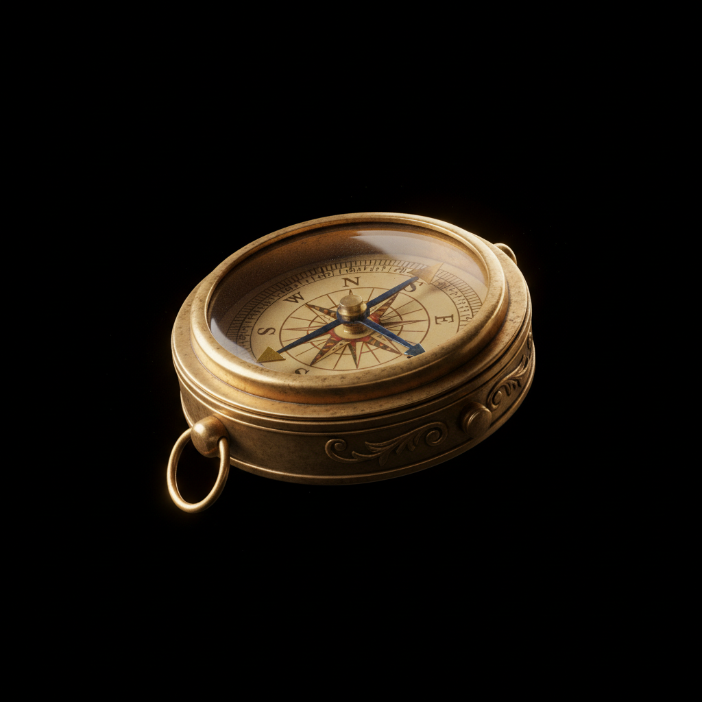
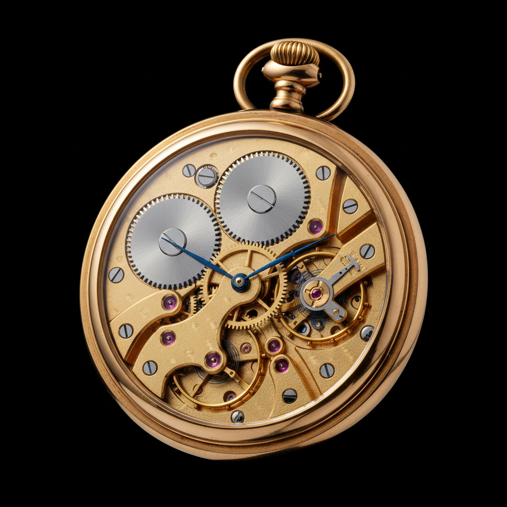
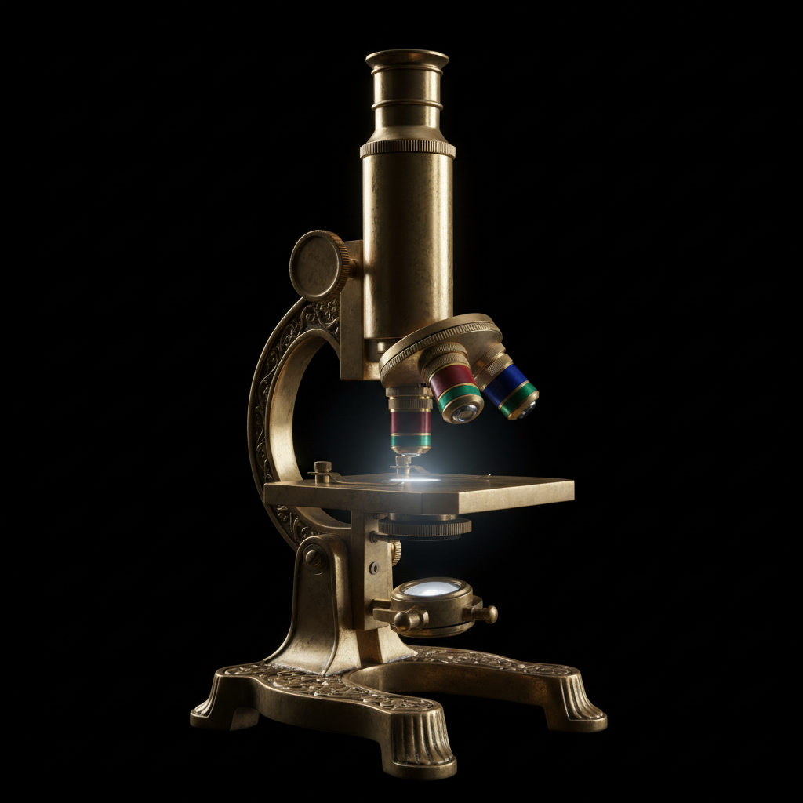

8 objects found

Tools & Hardware
The quintessential hand tool for driving nails and prying them out, unchanged in design for centuries.
Electronics
The revolutionary device that brought broadcast audio into homes, transforming entertainment and communication forever.

Musical Instruments
A stringed instrument with a hollow body that produces sound through vibrating strings and resonance.

Scientific Equipment
An optical instrument that uses lenses to magnify distant objects, revolutionizing our understanding of the cosmos.

Lighting
The iconic invention that banished darkness from human habitation and transformed civilization.

Navigation
A magnetized needle that aligns with Earth's magnetic field, enabling navigation across featureless landscapes and open seas.

Mechanisms
A portable timepiece driven by a spring-powered escapement mechanism, representing the pinnacle of mechanical miniaturization.

An instrument that uses visible light and lenses to magnify tiny objects, revealing the invisible world of cells and microorganisms.